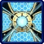
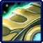
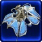
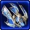
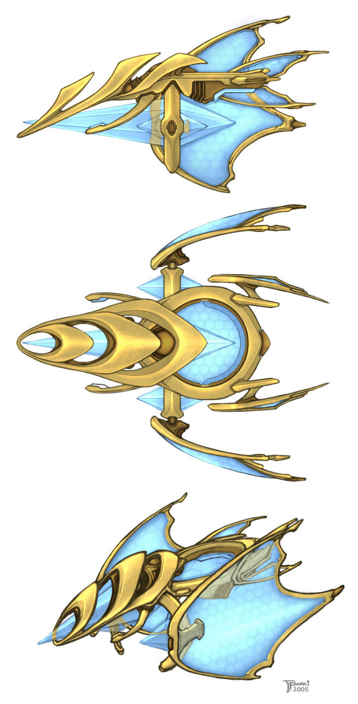

- Stats
- Abilities/Upgrades
- Strategy
- Lore
- Related
Armor: 0 |
 0/0 0 per second
0/0 0 per secondDamage: 0
Attacks: 0
Cooldown: 0
Targets: None
Attack Range: 0
3.375 with  Gravitic Drive
Acceleration: 2.125 |
3.25 with
 Gravitic Drive
Gravitic DriveCollision Radius: 0.875
Requirements: Levels 2-3 requires Fleet Beacon
| Level |  Level 1 Level 1 |  Level 2 Level 2 |  Level 3 Level 3 |
| Minerals |  150 150 | 225 | 300 |
| Vespene Gas |  150 150 | 225 | 300 |
| Time |  160 160 | 190 | 220 |
| Damage Bonus | 0 | 0 | 0 |
| Total Damage | 0 | 0 | 0 |
200Vespene Cost:
0Supply:
 2
2Produced From: Robotics Facility Build Time:
50Requirements: Robotics Facility
Unit Type: Armored, Mechanical, Psionic, Air
Requirements: Levels 2-3 requires Fleet Beacon
| Level |  Level 1 Level 1 |  Level 2 |  Level 3 Level 3 |
| Minerals | 150 | 225 | 300 |
| Vespene Gas | 150 | 225 | 300 |
| Time | 160 | 190 | 220 |
| Armor Bonus | +1 | +2 | +3 |
| Total Armor | 1 | 2 | 3 |
Requirements: Levels 2-3 requires Twilight Council
| Level |  Level 1 Level 1 |  Level 2 Level 2 |  Level 3 Level 3 |
| Minerals | 150 | 225 | 300 |
| Vespene Gas | 150 | 225 | 300 |
| Time | 160 | 190 | 220 |
| Armor Bonus | +1 | +2 | +3 |
| Total Armor | 1 | 2 | 3 |
| Icon | Minerals | Vespene Gas | Research Time | Researched At |
|  | 0 | 0 | 0 | Already Researched |
Cooldown:
0Cast Time:
2Information: This ability transforms the Warp Prism into a floating Pylon. This does not give supply, but creates a power field around it as if it was a pylon. This makes the Warp Prism immobile.
You can do anything a Pylon power field could do with this. Warp in units, warp in buildings, even power old buildings if they have lost their powering Pylon(s).
You can still load/unload units in the Warp Prism, but it is still unable to move.
| Icon | Minerals | Vespene Gas | Research Time | Researched At |
|  | 0 | 0 | 0 | Already Researched |
Cooldown:
0Cast Time:
2Information: This ability turns the Warp Prism back into a transport. It turns off the power field it had, unpowering anything it was, and preventing it to be used as a warp in spot.
Any buildings placed in the temporary power field will continue to build until finished, but once completed if they are not in a power field they will not be useable.
| Icon | Minerals | Vespene Gas | Research Time | Researched At |
| 0 | 0 | 0 | Already Researched |
Information: This allows the unit with this ability to load or unload units into it. The Warp Prism has a maximum capcity of 8 unit size. Not 8 units, but 8 unit size.
| Icon | Minerals | Vespene Gas | Research Time | Researched At |
| 100 | 100 | 80 | Robotics Bay |
Information: Upon research of this ability Warp Prisms are given a passive speed boost to 3.375 from 2.5, and increases their acceleration to 3.25 from 2.125
A simple way to differentiate which upgrade in the Robotics Bay is for the Observer or Warp Prism is to look at the icon, and then think of the unit itself. The icon represents the unit's engine, and the icon looks like the backside of the unit where the engine would be.
If you have any suggestions for more strategies, go ahead and post on the forums 'here'!
Shift Queue Blinking
Sometimes when you have a large amount of stalkers, blinking can become more difficult and not all stalkers will end up where intended. A way to help this is to queue up a move command (to have the stalkers in range to blink), then the blink, and then another move command (to move the stalkers in front out of the way).
+1 Weapons vs Zerglings
Sum text about how gosu this is
+1 Weapons vs Zerglings
Sum text about how gosu this is
- Overview
The warp prism is an automated vessel, controlled by a robotic mind created through a psionic manufacturing process. Its programming is built into the molecules of an advanced crystal lattice. This "crystal computer" is able to manipulate matter and energy with great precision.
The protoss use warp prisms in several ways. The primary function of a warp prism is to transport protoss forces on the battlefield. Living and inorganic subjects are transformed into energy, and their unique signature imprinted into the prism's crystal lattice core. On reaching the desired destination the operation is reversed and the stored energy signatures are reconfigured into matter in proximity to the warp prism.
A secondary but no less vital function of the warp prism is to act as a mobile focus for the protoss psionic matrix. Once the Prism is deployed it can power protoss structures around it. In this configuration warp prisms can be used to temporarily replace destroyed pylons in a colony or enable the rapid establishment of a forward base of operations.
{kind=link}
Source Information
Text information from the Starcraft Wiki.
Photo 1 created by Blizzard Entertainment. Copyright: Blizzard Entertainment.
| Protoss |
| Units |
| Nexus | Probe | Mothership |
| Gatway/Warpgate | Zealot | Stalker | Sentry | High Templar | Dark Templar | Archon |
| Robotics Facility | Observer | Immortal | Colossus | Warp Prism |
| Stargate | Phoenix | Void Ray | Carrier | Interceptor |
| Structures |
| Basic Buildings | Nexus | Pylon | Assimilator | Gateway/Warpgate | Forge | Photon Cannon |
| Advanced Buildings | Cybernetics Core | Robotics Facility | Twilight Council | Stargate |
| Top Tier Buildings | Robotics Bay | Templar Archives | Dark Shrine | Fleet Beacon |